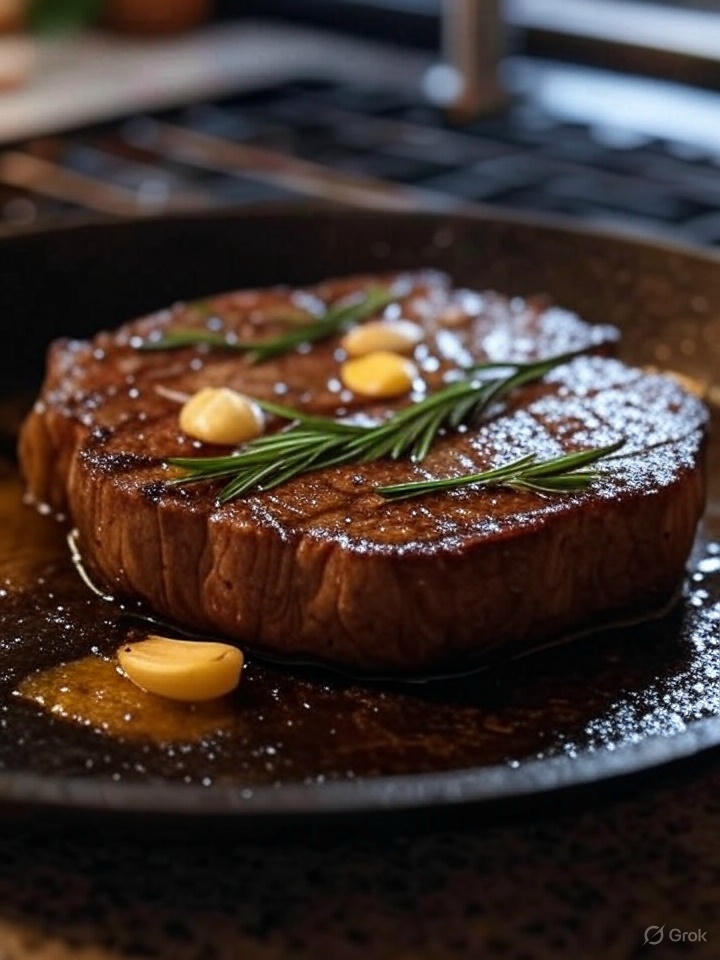

Home
Baste and Redpilled Steak

Description
A flavorful and perfectly cooked steak, seasoned simply and basted with butter, garlic, and rosemary for a rich, savory experience. This method ensures a juicy, tender cut, ideal for steak lovers looking for a classic preparation. You can also watch this 2:30 minute video from Gordon Ramsay which is great here for a classic preparation.
Ingredients
- Steak (ribeye or New York strip, your choice)
- Salt (or garlic salt, if preferred)
- Butter (salted, if preferred)
- Minced garlic (or fresh garlic, finely chopped)
- 1 clove rosemary
- Pepper as a finish
Steps
- Remove the steak from the fridge and let it sit out until it reaches room temperature.
- Season both sides of the steak with salt (or garlic salt, if preferred).
- Heat a skillet over medium-high heat with butter and minced garlic until melted and fragrant.
- Place the steak in the skillet and cook on one side, rendering fat on the sides if necessary.
- Flip the steak, add a clove of rosemary to the skillet, and use a spoon to repeatedly scoop the fat, garlic, and butter mixture over the steak.
- Remove the steak from the skillet when done to your liking and place it on a plate.
- Add pepper on top to taste